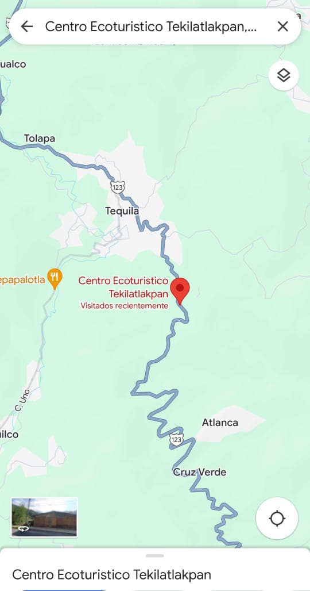
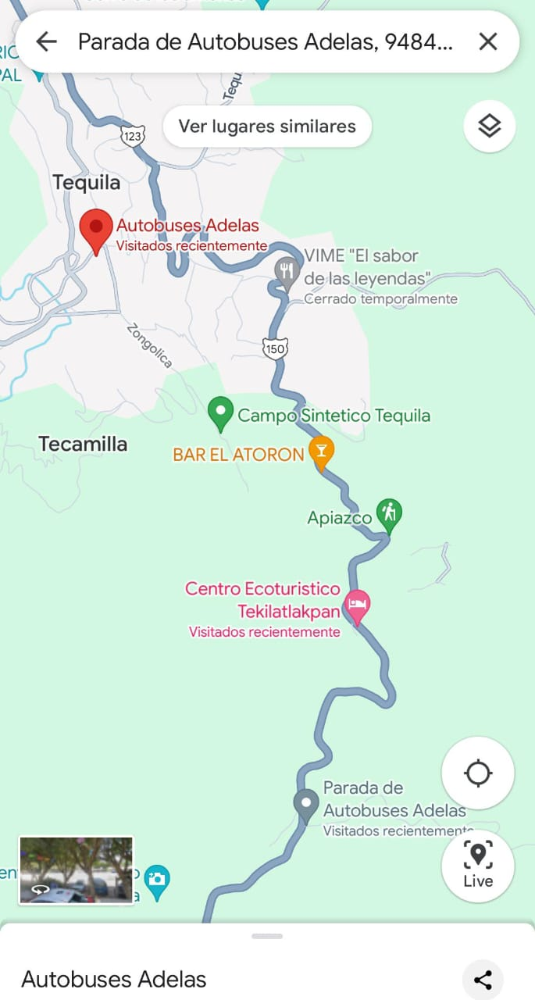

En coche
Desde Xalapa, toma la carretera federal 180 hacia el este durante aproximadamente 1 hora y 30 minutos. En Tequila, toma la carretera estatal 30 hacia el sur durante unos 15 minutos hasta llegar a Tequilatlakpan.
En autobús
Hay varias líneas de autobús que van desde Xalapa a orizaba. El viaje dura aproximadamente 2 horas. Una vez en orizaba, puedes tomar un taxi o un colectivo hasta Tequila la mejor recomendacion es tomar un colectivo de orizaba a zongolica ya que puedes bajar en el centro o en la entrada de tequilatlakpan .